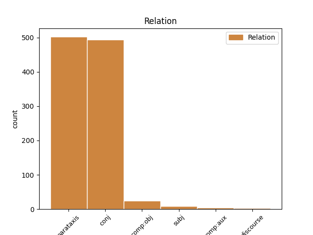
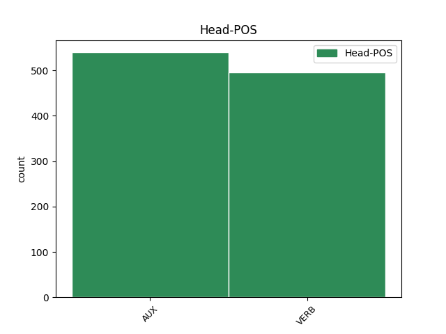
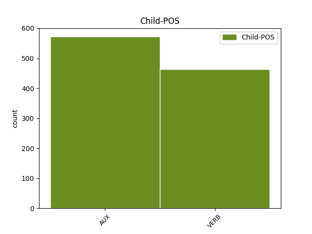

Distribution of features within this leaf



Agreement Rules sorted by frequency.
- When the dependent token is the parataxis(parataxis) of the head token, and the head token is AUX
1 Nasumice _ _ _ _ 0 _ _ _
2 sam biti AUX Var1s Mood=Ind|Number=Sing|Person=1|Tense=Pres|VerbForm=Fin 0 _ _ _
3 otvorio _ _ _ _ 0 _ _ _
4 njegov _ _ _ _ 0 _ _ _
5 roman _ _ _ _ 0 _ _ _
6 Saturnovi _ _ _ _ 0 _ _ _
7 prstenovi _ _ _ _ 0 _ _ _
8 i _ _ _ _ 0 _ _ _
9 naišao _ _ _ _ 0 _ _ _
10 na _ _ _ _ 0 _ _ _
11 rečenicu _ _ _ _ 0 _ _ _
12 : _ _ _ _ 0 _ _ _
13 „ _ _ _ _ 0 _ _ _
14 Mesecima _ _ _ _ 0 _ _ _
15 i _ _ _ _ 0 _ _ _
16 godinama _ _ _ _ 0 _ _ _
17 uspomene _ _ _ _ 0 _ _ _
18 spavaju spavati VERB Vmr3p Mood=Ind|Number=Plur|Person=3|Tense=Pres|VerbForm=Fin 2 parataxis _ _
19 u _ _ _ _ 0 _ _ _
20 nama _ _ _ _ 0 _ _ _
21 i _ _ _ _ 0 _ _ _
22 tiho _ _ _ _ 0 _ _ _
23 nastavljaju _ _ _ _ 0 _ _ _
24 da _ _ _ _ 0 _ _ _
25 bujaju _ _ _ _ 0 _ _ _
26 , _ _ _ _ 0 _ _ _
27 dok _ _ _ _ 0 _ _ _
28 ih _ _ _ _ 0 _ _ _
29 ne _ _ _ _ 0 _ _ _
30 prizove _ _ _ _ 0 _ _ _
31 nekakva _ _ _ _ 0 _ _ _
32 sitnica _ _ _ _ 0 _ _ _
33 , _ _ _ _ 0 _ _ _
34 nakon _ _ _ _ 0 _ _ _
35 čega _ _ _ _ 0 _ _ _
36 na _ _ _ _ 0 _ _ _
37 čudnovat _ _ _ _ 0 _ _ _
38 način _ _ _ _ 0 _ _ _
39 , _ _ _ _ 0 _ _ _
40 zaslepe _ _ _ _ 0 _ _ _
41 naše _ _ _ _ 0 _ _ _
42 bitisanje _ _ _ _ 0 _ _ _
43 . _ _ _ _ 0 _ _ _
44 ” _ _ _ _ 0 _ _ _
1 Ako _ _ _ _ 0 _ _ _
2 je _ _ _ _ 0 _ _ _
3 moguće _ _ _ _ 0 _ _ _
4 da _ _ _ _ 0 _ _ _
5 neko _ _ _ _ 0 _ _ _
6 uhakuje _ _ _ _ 0 _ _ _
7 vaš _ _ _ _ 0 _ _ _
8 toster _ _ _ _ 0 _ _ _
9 i _ _ _ _ 0 _ _ _
10 preko _ _ _ _ 0 _ _ _
11 njega _ _ _ _ 0 _ _ _
12 dođe doći VERB Vmr3s Mood=Ind|Number=Sing|Person=3|Tense=Pres|VerbForm=Fin 0 _ _ _
13 do _ _ _ _ 0 _ _ _
14 intimnih _ _ _ _ 0 _ _ _
15 podataka _ _ _ _ 0 _ _ _
16 o _ _ _ _ 0 _ _ _
17 vama _ _ _ _ 0 _ _ _
18 ili _ _ _ _ 0 _ _ _
19 hakovanjem _ _ _ _ 0 _ _ _
20 autopilota _ _ _ _ 0 _ _ _
21 u _ _ _ _ 0 _ _ _
22 kolima _ _ _ _ 0 _ _ _
23 može moći VERB Vmr3s Mood=Ind|Number=Sing|Person=3|Tense=Pres|VerbForm=Fin 12 conj _ _
24 da _ _ _ _ 0 _ _ _
25 se _ _ _ _ 0 _ _ _
26 počini _ _ _ _ 0 _ _ _
27 ubistvo _ _ _ _ 0 _ _ _
28 , _ _ _ _ 0 _ _ _
29 koliku _ _ _ _ 0 _ _ _
30 opasnost _ _ _ _ 0 _ _ _
31 onda _ _ _ _ 0 _ _ _
32 nosi _ _ _ _ 0 _ _ _
33 hakovanje _ _ _ _ 0 _ _ _
34 infrastrukture _ _ _ _ 0 _ _ _
35 ili _ _ _ _ 0 _ _ _
36 bolnica _ _ _ _ 0 _ _ _
37 ili _ _ _ _ 0 _ _ _
38 nuklearnih _ _ _ _ 0 _ _ _
39 silosa _ _ _ _ 0 _ _ _
40 ? _ _ _ _ 0 _ _ _
1 Naime _ _ _ _ 0 _ _ _
2 , _ _ _ _ 0 _ _ _
3 2016. _ _ _ _ 0 _ _ _
4 jedan _ _ _ _ 0 _ _ _
5 pametni _ _ _ _ 0 _ _ _
6 automobil _ _ _ _ 0 _ _ _
7 američkog _ _ _ _ 0 _ _ _
8 proizvođača _ _ _ _ 0 _ _ _
9 Tesla _ _ _ _ 0 _ _ _
10 Motors _ _ _ _ 0 _ _ _
11 nije biti AUX Var3s Mood=Ind|Number=Sing|Person=3|Polarity=Neg|Tense=Pres|VerbForm=Fin 0 _ _ _
12 uspeo _ _ _ _ 0 _ _ _
13 da _ _ _ _ 0 _ _ _
14 uoči _ _ _ _ 0 _ _ _
15 razliku _ _ _ _ 0 _ _ _
16 između _ _ _ _ 0 _ _ _
17 bele _ _ _ _ 0 _ _ _
18 površine _ _ _ _ 0 _ _ _
19 prikolice _ _ _ _ 0 _ _ _
20 i _ _ _ _ 0 _ _ _
21 neba _ _ _ _ 0 _ _ _
22 i _ _ _ _ 0 _ _ _
23 došlo _ _ _ _ 0 _ _ _
24 je biti AUX Var3s Mood=Ind|Number=Sing|Person=3|Tense=Pres|VerbForm=Fin 11 conj _ _
25 do _ _ _ _ 0 _ _ _
26 sudara _ _ _ _ 0 _ _ _
27 sa _ _ _ _ 0 _ _ _
28 smrtnim _ _ _ _ 0 _ _ _
29 ishodom _ _ _ _ 0 _ _ _
30 . _ _ _ _ 0 _ _ _
1 Pored _ _ _ _ 0 _ _ _
2 brojnih _ _ _ _ 0 _ _ _
3 loših _ _ _ _ 0 _ _ _
4 posledica _ _ _ _ 0 _ _ _
5 , _ _ _ _ 0 _ _ _
6 nedostatak _ _ _ _ 0 _ _ _
7 sna _ _ _ _ 0 _ _ _
8 dovodi dovoditi VERB Vmr3s Mood=Ind|Number=Sing|Person=3|Tense=Pres|VerbForm=Fin 0 _ _ _
9 i _ _ _ _ 0 _ _ _
10 do _ _ _ _ 0 _ _ _
11 toga _ _ _ _ 0 _ _ _
12 da _ _ _ _ 0 _ _ _
13 mozak _ _ _ _ 0 _ _ _
14 počinje _ _ _ _ 0 _ _ _
15 da _ _ _ _ 0 _ _ _
16 „ _ _ _ _ 0 _ _ _
17 jede _ _ _ _ 0 _ _ _
18 sam _ _ _ _ 0 _ _ _
19 sebe _ _ _ _ 0 _ _ _
20 ” _ _ _ _ 0 _ _ _
21 , _ _ _ _ 0 _ _ _
22 zaključak _ _ _ _ 0 _ _ _
23 je biti AUX Var3s Mood=Ind|Number=Sing|Person=3|Tense=Pres|VerbForm=Fin 8 parataxis _ _
24 novog _ _ _ _ 0 _ _ _
25 istraživanja _ _ _ _ 0 _ _ _
1 Jedan _ _ _ _ 0 _ _ _
2 od _ _ _ _ 0 _ _ _
3 pionirskih _ _ _ _ 0 _ _ _
4 koraka _ _ _ _ 0 _ _ _
5 na _ _ _ _ 0 _ _ _
6 putu _ _ _ _ 0 _ _ _
7 ka _ _ _ _ 0 _ _ _
8 Internetu _ _ _ _ 0 _ _ _
9 stvari _ _ _ _ 0 _ _ _
10 napravljen _ _ _ _ 0 _ _ _
11 je _ _ _ _ 0 _ _ _
12 još _ _ _ _ 0 _ _ _
13 davne _ _ _ _ 0 _ _ _
14 1982. _ _ _ _ 0 _ _ _
15 kada _ _ _ _ 0 _ _ _
16 je _ _ _ _ 0 _ _ _
17 na _ _ _ _ 0 _ _ _
18 Karnegi _ _ _ _ 0 _ _ _
19 univerzitetu _ _ _ _ 0 _ _ _
20 u _ _ _ _ 0 _ _ _
21 Pensilvaniji _ _ _ _ 0 _ _ _
22 uspešno _ _ _ _ 0 _ _ _
23 umrežen _ _ _ _ 0 _ _ _
24 automat _ _ _ _ 0 _ _ _
25 za _ _ _ _ 0 _ _ _
26 koka-kolu _ _ _ _ 0 _ _ _
27 sa _ _ _ _ 0 _ _ _
28 kompjuterima _ _ _ _ 0 _ _ _
29 univerziteta _ _ _ _ 0 _ _ _
30 tako _ _ _ _ 0 _ _ _
31 da _ _ _ _ 0 _ _ _
32 je _ _ _ _ 0 _ _ _
33 svaki _ _ _ _ 0 _ _ _
34 zaposleni _ _ _ _ 0 _ _ _
35 mogao _ _ _ _ 0 _ _ _
36 da _ _ _ _ 0 _ _ _
37 vidi videti VERB Vmr3s Mood=Ind|Number=Sing|Person=3|Tense=Pres|VerbForm=Fin 0 _ _ _
38 preko _ _ _ _ 0 _ _ _
39 računara _ _ _ _ 0 _ _ _
40 koje _ _ _ _ 0 _ _ _
41 dugme _ _ _ _ 0 _ _ _
42 na _ _ _ _ 0 _ _ _
43 automatu _ _ _ _ 0 _ _ _
44 treba trebati VERB Vmr3s Mood=Ind|Number=Sing|Person=3|Tense=Pres|VerbForm=Fin 37 comp:obj _ _
45 pritisnuti _ _ _ _ 0 _ _ _
46 da _ _ _ _ 0 _ _ _
47 bi _ _ _ _ 0 _ _ _
48 se _ _ _ _ 0 _ _ _
49 dobila _ _ _ _ 0 _ _ _
50 najrashlađenija _ _ _ _ 0 _ _ _
51 boca _ _ _ _ 0 _ _ _
52 u _ _ _ _ 0 _ _ _
53 mašini _ _ _ _ 0 _ _ _
54 . _ _ _ _ 0 _ _ _
1 Naime _ _ _ _ 0 _ _ _
2 , _ _ _ _ 0 _ _ _
3 u _ _ _ _ 0 _ _ _
4 ovoj _ _ _ _ 0 _ _ _
5 vrsti _ _ _ _ 0 _ _ _
6 romana _ _ _ _ 0 _ _ _
7 ne _ _ _ _ 0 _ _ _
8 odgoneta odgonetati VERB Vmr3s Mood=Ind|Number=Sing|Person=3|Tense=Pres|VerbForm=Fin 0 _ _ _
9 se _ _ _ _ 0 _ _ _
10 samo _ _ _ _ 0 _ _ _
11 ko _ _ _ _ 0 _ _ _
12 je biti AUX Var3s Mood=Ind|Number=Sing|Person=3|Tense=Pres|VerbForm=Fin 8 subj _ _
13 ubica _ _ _ _ 0 _ _ _
14 , _ _ _ _ 0 _ _ _
15 već _ _ _ _ 0 _ _ _
16 i _ _ _ _ 0 _ _ _
17 u _ _ _ _ 0 _ _ _
18 kakvom _ _ _ _ 0 _ _ _
19 svetu _ _ _ _ 0 _ _ _
20 živimo _ _ _ _ 0 _ _ _
21 . _ _ _ _ 0 _ _ _
1 Nije biti AUX Var3s Mood=Ind|Number=Sing|Person=3|Tense=Pres|VerbForm=Fin 0 _ _ _
2 sasvim _ _ _ _ 0 _ _ _
3 jasno _ _ _ _ 0 _ _ _
4 koliko _ _ _ _ 0 _ _ _
5 se _ _ _ _ 0 _ _ _
6 dugo _ _ _ _ 0 _ _ _
7 mogu moći VERB Vmr3p Mood=Ind|Number=Plur|Person=3|Tense=Pres|VerbForm=Fin 1 subj _ _
8 osećati _ _ _ _ 0 _ _ _
9 posledice _ _ _ _ 0 _ _ _
10 deprivacije _ _ _ _ 0 _ _ _
11 sna _ _ _ _ 0 _ _ _
12 . _ _ _ _ 0 _ _ _
1 Ukratko _ _ _ _ 0 _ _ _
2 , _ _ _ _ 0 _ _ _
3 novo _ _ _ _ 0 _ _ _
4 Ljosino _ _ _ _ 0 _ _ _
5 ostvarenje _ _ _ _ 0 _ _ _
6 spada _ _ _ _ 0 _ _ _
7 u _ _ _ _ 0 _ _ _
8 srednji _ _ _ _ 0 _ _ _
9 vrednosni _ _ _ _ 0 _ _ _
10 nivo _ _ _ _ 0 _ _ _
11 i _ _ _ _ 0 _ _ _
12 više _ _ _ _ 0 _ _ _
13 će hteti AUX Var3s Mood=Ind|Number=Sing|Person=3|Tense=Pres|VerbForm=Fin 0 _ _ _
14 da _ _ _ _ 0 _ _ _
15 vas _ _ _ _ 0 _ _ _
16 zabavi zabaviti VERB Vmr3s Mood=Ind|Number=Sing|Person=3|Tense=Pres|VerbForm=Fin 13 comp:aux _ _
17 nego _ _ _ _ 0 _ _ _
18 da _ _ _ _ 0 _ _ _
19 vas _ _ _ _ 0 _ _ _
20 odlučno _ _ _ _ 0 _ _ _
21 i _ _ _ _ 0 _ _ _
22 neopozivo _ _ _ _ 0 _ _ _
23 suoči _ _ _ _ 0 _ _ _
24 sa _ _ _ _ 0 _ _ _
25 slikom _ _ _ _ 0 _ _ _
26 savremenog _ _ _ _ 0 _ _ _
27 sveta _ _ _ _ 0 _ _ _
28 u _ _ _ _ 0 _ _ _
29 kojoj _ _ _ _ 0 _ _ _
30 se _ _ _ _ 0 _ _ _
31 , _ _ _ _ 0 _ _ _
32 na _ _ _ _ 0 _ _ _
33 neki _ _ _ _ 0 _ _ _
34 iznenađujuć _ _ _ _ 0 _ _ _
35 način _ _ _ _ 0 _ _ _
36 , _ _ _ _ 0 _ _ _
37 socijalna _ _ _ _ 0 _ _ _
38 stvarnost _ _ _ _ 0 _ _ _
39 Perua _ _ _ _ 0 _ _ _
40 i _ _ _ _ 0 _ _ _
41 Srbije _ _ _ _ 0 _ _ _
42 , _ _ _ _ 0 _ _ _
43 Lime _ _ _ _ 0 _ _ _
44 i _ _ _ _ 0 _ _ _
45 Beograda _ _ _ _ 0 _ _ _
46 čine _ _ _ _ 0 _ _ _
47 još _ _ _ _ 0 _ _ _
48 malo _ _ _ _ 0 _ _ _
49 pa _ _ _ _ 0 _ _ _
50 analognim _ _ _ _ 0 _ _ _
51 ! _ _ _ _ 0 _ _ _
Disagree Examples:
1 Krivična _ _ _ _ 0 _ _ _
2 presuda _ _ _ _ 0 _ _ _
3 i _ _ _ _ 0 _ _ _
4 zatvorska _ _ _ _ 0 _ _ _
5 kazna _ _ _ _ 0 _ _ _
6 medijskom _ _ _ _ 0 _ _ _
7 mogulu _ _ _ _ 0 _ _ _
8 Veliji _ _ _ _ 0 _ _ _
9 Ramkovskom _ _ _ _ 0 _ _ _
10 , _ _ _ _ 0 _ _ _
11 koji _ _ _ _ 0 _ _ _
12 je _ _ _ _ 0 _ _ _
13 često _ _ _ _ 0 _ _ _
14 kritikovao _ _ _ _ 0 _ _ _
15 makedonsku _ _ _ _ 0 _ _ _
16 vladu _ _ _ _ 0 _ _ _
17 , _ _ _ _ 0 _ _ _
18 mogla _ _ _ _ 0 _ _ _
19 bi biti AUX Vaa3s Mood=Cnd|Number=Sing|Person=3|Tense=Past|VerbForm=Fin 0 _ _ _
20 da _ _ _ _ 0 _ _ _
21 zaplaši _ _ _ _ 0 _ _ _
22 medije _ _ _ _ 0 _ _ _
23 , _ _ _ _ 0 _ _ _
24 kažu kazati VERB Vmr3p Mood=Ind|Number=Plur|Person=3|Tense=Pres|VerbForm=Fin 19 parataxis _ _
25 novinari _ _ _ _ 0 _ _ _
26 u _ _ _ _ 0 _ _ _
27 toj _ _ _ _ 0 _ _ _
28 maloj _ _ _ _ 0 _ _ _
29 balkanskoj _ _ _ _ 0 _ _ _
30 državi _ _ _ _ 0 _ _ _
31 . _ _ _ _ 0 _ _ _
1 " _ _ _ _ 0 _ _ _
2 Ovo _ _ _ _ 0 _ _ _
3 bi biti AUX Vaa3s Mood=Cnd|Number=Sing|Person=3|Tense=Past|VerbForm=Fin 0 _ _ _
4 moglo _ _ _ _ 0 _ _ _
5 da _ _ _ _ 0 _ _ _
6 iskomplikuje _ _ _ _ 0 _ _ _
7 funkcionisanje _ _ _ _ 0 _ _ _
8 Predsedništva _ _ _ _ 0 _ _ _
9 BiH _ _ _ _ 0 _ _ _
10 i _ _ _ _ 0 _ _ _
11 ministarstva _ _ _ _ 0 _ _ _
12 spoljnih _ _ _ _ 0 _ _ _
13 poslova _ _ _ _ 0 _ _ _
14 , _ _ _ _ 0 _ _ _
15 u _ _ _ _ 0 _ _ _
16 pogledu _ _ _ _ 0 _ _ _
17 činjenice _ _ _ _ 0 _ _ _
18 da _ _ _ _ 0 _ _ _
19 je _ _ _ _ 0 _ _ _
20 Komšić _ _ _ _ 0 _ _ _
21 , _ _ _ _ 0 _ _ _
22 zajedno _ _ _ _ 0 _ _ _
23 sa _ _ _ _ 0 _ _ _
24 drugim _ _ _ _ 0 _ _ _
25 članovima _ _ _ _ 0 _ _ _
26 Predsedništva _ _ _ _ 0 _ _ _
27 , _ _ _ _ 0 _ _ _
28 zadužen _ _ _ _ 0 _ _ _
29 za _ _ _ _ 0 _ _ _
30 spoljnu _ _ _ _ 0 _ _ _
31 politiku _ _ _ _ 0 _ _ _
32 " _ _ _ _ 0 _ _ _
33 , _ _ _ _ 0 _ _ _
34 rekao _ _ _ _ 0 _ _ _
35 je biti AUX Var3s Mood=Ind|Number=Sing|Person=3|Tense=Pres|VerbForm=Fin 3 parataxis _ _
36 Tihić _ _ _ _ 0 _ _ _
37 za _ _ _ _ 0 _ _ _
38 SETimes _ _ _ _ 0 _ _ _
39 . _ _ _ _ 0 _ _ _
1 Ljudi _ _ _ _ 0 _ _ _
2 bi biti AUX Vaa3s Mood=Cnd|Number=Sing|Person=3|Tense=Past|VerbForm=Fin 0 _ _ _
3 trebalo _ _ _ _ 0 _ _ _
4 da _ _ _ _ 0 _ _ _
5 shvate _ _ _ _ 0 _ _ _
6 da _ _ _ _ 0 _ _ _
7 je _ _ _ _ 0 _ _ _
8 EU _ _ _ _ 0 _ _ _
9 prostor _ _ _ _ 0 _ _ _
10 vrednosti _ _ _ _ 0 _ _ _
11 i _ _ _ _ 0 _ _ _
12 blagostanja _ _ _ _ 0 _ _ _
13 i _ _ _ _ 0 _ _ _
14 oni _ _ _ _ 0 _ _ _
15 zaslužuju _ _ _ _ 0 _ _ _
16 da _ _ _ _ 0 _ _ _
17 budu _ _ _ _ 0 _ _ _
18 deo _ _ _ _ 0 _ _ _
19 njega _ _ _ _ 0 _ _ _
20 -- _ _ _ _ 0 _ _ _
21 ali _ _ _ _ 0 _ _ _
22 i _ _ _ _ 0 _ _ _
23 mi _ _ _ _ 0 _ _ _
24 moramo _ _ _ _ 0 _ _ _
25 da _ _ _ _ 0 _ _ _
26 uložimo _ _ _ _ 0 _ _ _
27 određene _ _ _ _ 0 _ _ _
28 napore _ _ _ _ 0 _ _ _
29 " _ _ _ _ 0 _ _ _
30 , _ _ _ _ 0 _ _ _
31 rekao _ _ _ _ 0 _ _ _
32 je biti AUX Var3s Mood=Ind|Number=Sing|Person=3|Tense=Pres|VerbForm=Fin 2 parataxis _ _
33 Timofti _ _ _ _ 0 _ _ _
34 tokom _ _ _ _ 0 _ _ _
35 izbora _ _ _ _ 0 _ _ _
36 . _ _ _ _ 0 _ _ _
1 Crvenkovski _ _ _ _ 0 _ _ _
2 : _ _ _ _ 0 _ _ _
3 Spor _ _ _ _ 0 _ _ _
4 oko _ _ _ _ 0 _ _ _
5 imena _ _ _ _ 0 _ _ _
6 između _ _ _ _ 0 _ _ _
7 Makedonije _ _ _ _ 0 _ _ _
8 i _ _ _ _ 0 _ _ _
9 Grčke _ _ _ _ 0 _ _ _
10 je biti AUX Var3s Mood=Ind|Number=Sing|Person=3|Tense=Pres|VerbForm=Fin 0 _ _ _
11 bilateralan _ _ _ _ 0 _ _ _
12 spor _ _ _ _ 0 _ _ _
13 koji _ _ _ _ 0 _ _ _
14 ni _ _ _ _ 0 _ _ _
15 na _ _ _ _ 0 _ _ _
16 koji _ _ _ _ 0 _ _ _
17 način _ _ _ _ 0 _ _ _
18 ne _ _ _ _ 0 _ _ _
19 spada _ _ _ _ 0 _ _ _
20 u _ _ _ _ 0 _ _ _
21 uslove _ _ _ _ 0 _ _ _
22 za _ _ _ _ 0 _ _ _
23 članstvo _ _ _ _ 0 _ _ _
24 i _ _ _ _ 0 _ _ _
25 u _ _ _ _ 0 _ _ _
26 principu _ _ _ _ 0 _ _ _
27 ne _ _ _ _ 0 _ _ _
28 bi biti AUX Vaa3s Mood=Cnd|Number=Sing|Person=3|Tense=Past|VerbForm=Fin 10 conj _ _
29 trebalo _ _ _ _ 0 _ _ _
30 da _ _ _ _ 0 _ _ _
31 bude _ _ _ _ 0 _ _ _
32 prepreka _ _ _ _ 0 _ _ _
33 za _ _ _ _ 0 _ _ _
34 našu _ _ _ _ 0 _ _ _
35 integraciju _ _ _ _ 0 _ _ _
36 u _ _ _ _ 0 _ _ _
37 NATO _ _ _ _ 0 _ _ _
38 . _ _ _ _ 0 _ _ _
1 " _ _ _ _ 0 _ _ _
2 Hrvatska _ _ _ _ 0 _ _ _
3 bi biti AUX Vaa3s Mood=Cnd|Number=Sing|Person=3|Tense=Past|VerbForm=Fin 0 _ _ _
4 trebalo _ _ _ _ 0 _ _ _
5 da _ _ _ _ 0 _ _ _
6 nastavi _ _ _ _ 0 _ _ _
7 svoje _ _ _ _ 0 _ _ _
8 reformske _ _ _ _ 0 _ _ _
9 napore _ _ _ _ 0 _ _ _
10 sa _ _ _ _ 0 _ _ _
11 istom _ _ _ _ 0 _ _ _
12 energijom _ _ _ _ 0 _ _ _
13 , _ _ _ _ 0 _ _ _
14 a _ _ _ _ 0 _ _ _
15 posebno _ _ _ _ 0 _ _ _
16 u _ _ _ _ 0 _ _ _
17 pogledu _ _ _ _ 0 _ _ _
18 pravosuđa _ _ _ _ 0 _ _ _
19 i _ _ _ _ 0 _ _ _
20 osnovnih _ _ _ _ 0 _ _ _
21 prava _ _ _ _ 0 _ _ _
22 i _ _ _ _ 0 _ _ _
23 da _ _ _ _ 0 _ _ _
24 bude _ _ _ _ 0 _ _ _
25 u _ _ _ _ 0 _ _ _
26 stanju _ _ _ _ 0 _ _ _
27 da _ _ _ _ 0 _ _ _
28 u _ _ _ _ 0 _ _ _
29 potpunosti _ _ _ _ 0 _ _ _
30 preuzme _ _ _ _ 0 _ _ _
31 obaveze _ _ _ _ 0 _ _ _
32 članstva _ _ _ _ 0 _ _ _
33 od _ _ _ _ 0 _ _ _
34 dana _ _ _ _ 0 _ _ _
35 pridruživanja _ _ _ _ 0 _ _ _
36 " _ _ _ _ 0 _ _ _
37 , _ _ _ _ 0 _ _ _
38 navodi navoditi VERB Vmr3s Mood=Ind|Number=Sing|Person=3|Tense=Pres|VerbForm=Fin 3 parataxis _ _
39 se _ _ _ _ 0 _ _ _
40 u _ _ _ _ 0 _ _ _
41 konačnom _ _ _ _ 0 _ _ _
42 saopštenju _ _ _ _ 0 _ _ _
43 sa _ _ _ _ 0 _ _ _
44 samita _ _ _ _ 0 _ _ _
45 . _ _ _ _ 0 _ _ _